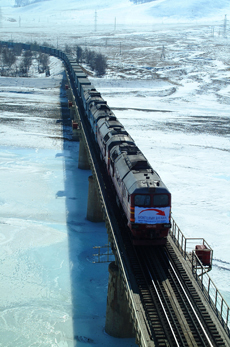

Transport of Mongolia
Mongolia’s most important transportation artery is the Trans-Mongolian Railway (officially, the Ulaanbaatar Railway), which runs north-south through the central part of the country. It links Mongolia to Russia and China and provides the shortest overland route between Moscow and Beijing. The railway, built as a Mongolian-Soviet joint venture, utilizes the Russian broad-gauge track width and is divided into northern and southern sections. The northern section (completed 1949) extends from the Russian border via Darkhan to Ulaanbaatar, following several river valleys through the mountainous terrain. Branchlines extend to the Erdenet copper-mining area and to the Sharyn Gol coal mines. The southern section (completed 1955) runs through rolling steppe and semidesert country from Ulaanbaatar to Zamyn Üüd on the Chinese border, where wheels are exchanged for those that allow the trains to travel on China’s standard-gauge system. Another railway connects Choibalsan with the Siberian rail system. A branch was built in the 1980s to connect this line with the uranium mines at Mardai. Another planned broad-gauge line would link the coal and copper mines in the southern Gobi to the Trans-Mongolian Railway and then run eastward to Choibalsan.
The railways carry the great bulk of Mongolia’s freight tonnage but relatively few passengers, while roads transport most of the rest of the freight and nearly all of the passengers. Roads connecting Ulaanbaatar with nearby provincial centres and with the Russian border are paved, but elsewhere the country’s roads are unpaved—most consisting of multiple dirt tracks through the steppe. Work got under way in the early 21st century on a major highway that, when finished, will connect Ulaanbaatar with Mongolia’s eastern and western border crossings. Herding families everywhere ride horses, and, for domestic haulage, camels are still used in semidesert areas and yaks and oxen on the steppes. A growing number of rural families have bought trucks or tractors, and the number of townspeople owning automobiles has increased.
Travelers in Mongolia would prefer to fly to destinations, if possible, because distances between population centres are great, and surface transport is slow. However, air carriers lack adequate equipment, so scheduled air service is infrequent and the number of passengers carried is modest. Some outlying towns have airports with paved runways that can accommodate jet aircraft, but most still have only basic facilities with dirt strips that are served by turboprop planes. Ulaanbaatar has an international airport, though its capacity is limited and its facilities substandard. Construction of a new modern airport is planned for west of the city.
Tugs and barges once hauled cargo on the Selenge River and petroleum products on Lake Khövsgöl. However, concerns about environmental pollution and the growing sophistication of rail and road transport have reduced inland watercraft to a handful of vehicle ferries. In 2003 Mongolia established a maritime shipping register with the help of a Singaporean firm.